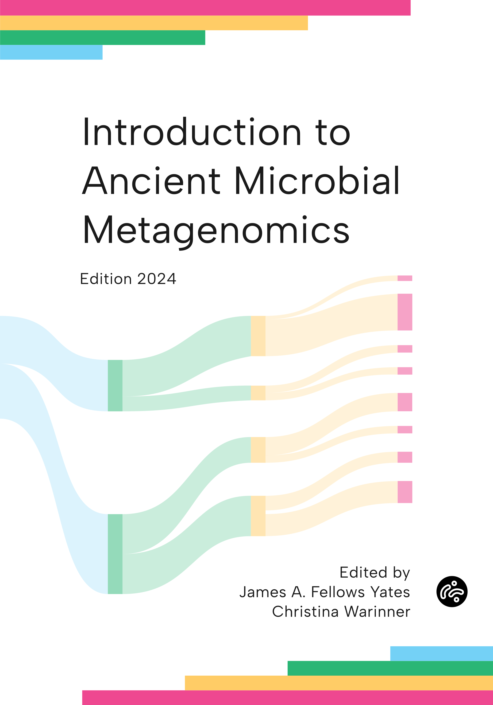

Introduction to Ancient Metagenomics
Introduction

Ancient metagenomics is an emerging field of research that applies the techniques of metagenomics to ancient DNA. Metagenomics is defined as the study of the collection of genes and genomes from an assemblage of microorganisms present in a defined environment (Marchesi and Ravel 2015), but in practice it often considers all DNA present in a given environment. Metagenomes are typically obtained by untargeted, so-called “shotgun” DNA sequencing, followed by analysis using reference-based mapping techniques or reference-free genome assembly techniques.
Ancient metagenomics applies these techniques to ancient DNA recovered from the archaeological and palaeontological records in order to reconstruct information about past ecologies, whether that is the structure and composition of past ecosystems, the microbial communities present in ancient microbiomes, the aetiology and pathogenesis of ancient infectious diseases, or the microbial make-up of ancient fermented foods.
Because ancient DNA is more degraded than modern DNA, many techniques and approaches used in metagenomics must be adapted or modified in order to allow for the study of ancient organisms. This can range from small parameter tweaks to existing methods to more large-scale changes, such as new laboratory protocols or specialised software tools. Ancient metagenomics studies also face distinct challenges with respect to authenticating results and managing post-mortem or post-depositional microbial contamination, and knowing these challenges, as well as strategies for their solution, is critical to the success of ancient metagenomics projects.
Fortunately, many new protocols, software tools, and pipelines have been developed to address many of the problems that challenge ancient metagenomics, and over the past decade the rapidly growing field of ancient metagenomics has leveraged these advancements to reveal an astonishing wealth of new information about human and natural history, from revealing how past ecosystems changed in response to long-term climatic and anthropogenic change, to identifying the causes of devastating pandemics, to reconstructing the microbiomes of extinct human relatives. However, as the field grows, the techniques, methods, and workflows used to analyse such data are rapidly changing and improving.
With such a fast-moving field, it can be difficult to know where to start, and this is true both for incoming students planning their first research projects and for established metagenomics researchers looking to pivot to ancient DNA. To help orient new people to the field, we have developed an online course and companion textbook that serves as a broad theoretical and practical introduction to the field of ancient metagenomics. The textbook is divided into five theoretical chapters and 12 practical exercise modules. The goal of the theoretical chapters is to provide an introduction to key concepts in genetics and genomics, ancient DNA, metagenomics and ecology, taxonomy and phylogeny, and functional genomics in order to establish the foundational knowledge necessary to plan and carry out ancient metagenomics research. The goal of the practical modules is to equip readers with a software toolkit and a practical understanding of the strategies used to analyse ancient metagenomics datasets.
Focusing on host-associated ancient metagenomics, readers will learn the main steps of ancient metagenomic bioinformatic workflows, become familiar with the command line, learn how to process next-generation-sequencing (NGS) data, conduct taxonomic profiling of datasets, carry out ecological analyses, and perform de novo metagenomic assembly. By the end of the textbook, readers will have an understanding of how to effectively carry out the major bioinformatic components of an ancient metagenomic project in an open, reliable, and reproducible manner (Figure 1).
All material was originally developed for the SPAAM Summer School: Introduction to Ancient Metagenomics